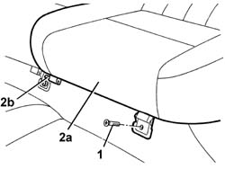

7050A22 rear seat cushion - r+r
- Path
- Procedures > 70 FITTINGS > 7050 REAR SEATS > 7050A rear seat assembly > 7050A22 rear seat cushion - r+r
- Kind
- repair procedure (removal / refitting; the operation number is the code)
- Applies to
- all engines; all production periods
- Interactive page
- https://sloeber94.github.io/elrnDB-a147/en/#/3025879
Applies to: all engines; all production periods
 Removing
Removing
 Refitting
RefittingMove the front seat fully forward.
1. Unscrew the outer cushion retaining bolt.
2. Remove cushion (2a) by taking pin (2b) out of the central mount.

Applies to: all engines; all production periods
Refitting
RemovingCheck that the cushion is undamaged.
Fit the cushion by engaging the pin.
Tighten the outer bolt.
Move the front seat backward.
Topics that link to this page (26)
- 3340A34 rpm sensor (one) of one l/h or r/h rear wheel - r+r
- 3340A35 left rear wheel rpm sensor - r r
- 3340A37 right rear wheel rpm sensor - r r
- 5505C28 intergrated engine bay and abs system wiring - r r
- 5505C41 cabin wiring - r r
- 5570T94 rear tweeter (one), lh or rh - r r
- 5570T96 rear side speaker - r r
- 5580C40 sidebag sensor (one), lh or rh - r r
- 5580C50 (HEAD- BAG MODULE ) (one), left or right - R.R.
- 5580T20 bose sound system rear speaker (one), lh or rh - r r
- 7015A14 tailgate - adjust centring and profile - includes hinge and compartment seal adaptation
- 7015A24 tailgate hinges - repair or replace with tailgate removed
- 7035C52 (One), side WINDOW left or right - R.R.
- 7035C54 side window one lh or rh r r includes cleaning of housing
- 7040B06 side trim (one) lh or rh, load compartment/load platform - r r
- 7040H16 roof panel lining - r r
- 7040H38 central pillar upper element - r r
- 7040H42 rear pillar trim - r r
- 7040H50 rear panel - r r
- 7040L10 cabin floor carpet - r r
- 7040L13 passenger compartment floor soundproofing - r r
- 7050A14 split rear seat assembly - r+r
- 7050A29 CABLE for device for locking/releasing BACKREST for one individual rear. seat - R.R. with seat removed
- 7065A12 front seat belt (one), lh or rh, with pretensioner on wheel - r r
- 7065A18 Front set belt HEIGHT ADJUSTER , (one), left or right - R.R.
- 7065B10 l/h or r/h rear safety belt (one) - r+r